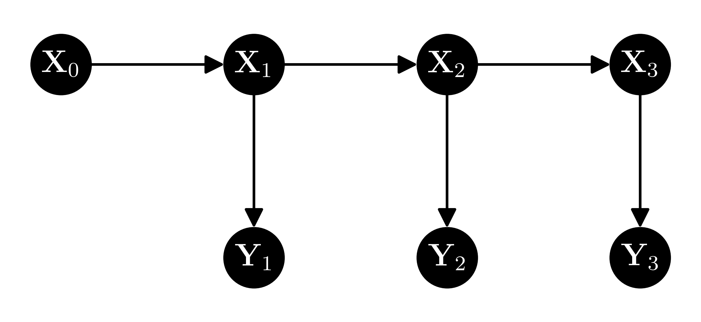

\(\newcommand{\P}{\mathbb{P}}\) \(\newcommand{\E}{\mathbb{E}}\) \(\newcommand{\S}{\mathcal{S}}\) \(\newcommand{\var}{\mathrm{Var}}\) \(\newcommand{\bmu}{\boldsymbol{\mu}}\) \(\newcommand{\bSigma}{\boldsymbol{\Sigma}}\) \(\newcommand{\btheta}{\boldsymbol{\theta}}\) \(\newcommand{\bpi}{\boldsymbol{\pi}}\) \(\newcommand{\indep}{\perp\!\!\!\perp}\) \(\newcommand{\bp}{\mathbf{p}}\) \(\newcommand{\bx}{\mathbf{x}}\) \(\newcommand{\bX}{\mathbf{X}}\) \(\newcommand{\by}{\mathbf{y}}\) \(\newcommand{\bY}{\mathbf{Y}}\) \(\newcommand{\bz}{\mathbf{z}}\) \(\newcommand{\bZ}{\mathbf{Z}}\) \(\newcommand{\bw}{\mathbf{w}}\) \(\newcommand{\bW}{\mathbf{W}}\) \(\newcommand{\bv}{\mathbf{v}}\) \(\newcommand{\bV}{\mathbf{V}}\) \(\newcommand{\Z}{\mathcal{Z}}\) \(\newcommand{\bphi}{\boldsymbol{\phi}}\)
6.6. Exercises#
6.6.1. Warm-up worksheets#
(with help from Claude, Gemini, and ChatGPT)
Section 6.2
E6.2.1 For a categorical random variable \(Y\) with \(K = 3\) categories and probabilities \(\pi_1 = 0.2\), \(\pi_2 = 0.5\), and \(\pi_3 = 0.3\), compute the probability \(\mathbb{P}(Y = e_2)\).
E6.2.2 Given a dataset of 10 coin flips \((1, 0, 1, 1, 0, 0, 1, 1, 0, 1)\), find the maximum likelihood estimate of the parameter \(q\) of a Bernoulli distribution.
E6.2.3 Prove that the maximum likelihood estimator for the parameter of a Bernoulli distribution is statistically consistent.
E6.2.4 Given a dataset \(\{(x_i, y_i)\}_{i=1}^n\) with \(x_i \in \mathbb{R}\) and \(y_i \in \{0, 1\}\), write down the negative log-likelihood for logistic regression and compute its gradient.
E6.2.5 For the dataset \(\{(1, 1), (2, 0), (3, 1), (4, 0)\}\), perform one step of gradient descent for logistic regression with learning rate \(\eta = 0.1\) and initial parameter \(w = 0\).
E6.2.6 Compute the gradient and Hessian of the negative log-likelihood for a generalized linear model with a Poisson distribution with mean \(\lambda\).
E6.2.7 A discrete random variable \(X\) has probability mass function (PMF) given by
where \(x \in \{-1, 0, 1\}\). Find the value of \(Z(\theta)\).
E6.2.8 Let \(X\) be a random variable with probability mass function (PMF) given by
where \(x \in \{-1, 0, 1\}\). Find the partition function \(Z(\theta)\).
E6.2.9 Given the sample \(\{X_1 = 1, X_2 = 2, X_3 = 2, X_4 = 3\}\) from a multinomial distribution with \(n = 4\) trials and \(K = 3\) categories, compute the empirical frequency for each category.
E6.2.10 Compute the determinant of the covariance matrix \(\Sigma = \begin{pmatrix} 4 & 2 \\ 2 & 3 \end{pmatrix}\).
E6.2.11 For a multivariate Gaussian vector \(X \in \mathbb{R}^2\) with mean \(\mu = \begin{pmatrix} 1 \\ 2 \end{pmatrix}\) and covariance matrix \(\Sigma = \begin{pmatrix} 2 & 1 \\ 1 & 2 \end{pmatrix}\), compute the log-likelihood of observing \(X = \begin{pmatrix} 1 \\ 3 \end{pmatrix}\).
Section 6.3
E6.3.1 Given the events \(A\) and \(B\) with \(P(A) = 0.4\), \(P(B) = 0.5\), and \(P(A \cap B) = 0.2\), compute the conditional probability \(P(A|B)\).
E6.3.2 Given the random variables \(X\) and \(Y\) with joint probability mass function \(p_{X,Y}(x,y) = \frac{1}{4}\) for \(x, y \in \{0, 1\}\), find \(P(Y=1|X=0)\).
E6.3.3 Calculate the conditional expectation \(\mathbb{E}[X|Y=y]\) for a discrete random variable \(X\) with \(\mathbb{P}(X = 1|Y = y) = 0.3\) and \(\mathbb{P}(X = 2|Y = y) = 0.7\).
E6.3.4 For the events \(A\) and \(B\) with \(P(A|B) = 0.6\) and \(P(B) = 0.5\), calculate \(P(A \cap B)\).
E6.3.5 Given events \(A\), \(B\), and \(C\) with \(P[A] = 0.6\), \(P[B] = 0.5\), \(P[C] = 0.4\), \(P[A \cap B] = 0.3\), \(P[A \cap C] = 0.2\), \(P[B \cap C] = 0.1\), and \(P[A \cap B \cap C] = 0.05\), compute \(P[A \mid B \cap C]\).
E6.3.6 Given events \(A\), \(B\), and \(C\) with \(P[A] = 0.7\), \(P[B \mid A] = 0.6\), and \(P[C \mid A \cap B] = 0.4\), compute \(P[A \cap B \cap C]\).
E6.3.7 Given events \(A\), \(B\), and \(C\) with \(P[A] = 0.8\), \(P[B] = 0.6\), and \(P[C] = 0.5\), and assuming that \(A\), \(B\), and \(C\) are pairwise independent, compute \(P[A \cap B \cap C]\).
E6.3.8 Let \(X, Y, Z\) be random variables taking values in \(\{0,1\}\). Given a fork configuration \(Y \leftarrow X \rightarrow Z\) with \((P[X=x])_{x} = (0.2, 0.8)\), \(P([Y=y \mid X=x])_{x,y} = \begin{pmatrix} 0.6 & 0.4 \\ 0.3 & 0.7 \end{pmatrix}\), and \((P[Z=z \mid X=x])_{x,z} = \begin{pmatrix} 0.8 & 0.2 \\ 0.1 & 0.9 \end{pmatrix}\), compute \((P[Y=y, Z=z])_{y,z}\).
E6.3.9 Let \(X, Y, Z\) be random variables taking values in \(\{0,1\}\). Given a chain configuration \(X \rightarrow Y \rightarrow Z\) with \((P[X=x])_x = (0.3, 0.7)\), \((P[Y=y \mid X=x])_{x,y} = \begin{pmatrix} 0.2 & 0.8 \\ 0.6 & 0.4 \end{pmatrix}\), and \((P[Z=z \mid Y=y])_{y,z} = \begin{pmatrix} 0.5 & 0.5 \\ 0.1 & 0.9 \end{pmatrix}\), compute \((P[X=x, Z=z])_{x,z}\).
E6.3.10 Consider a document classification problem with a vocabulary of 4 words and 2 topics. Given \(\pi = (0.5, 0.5)\), \(p_1 = (0.1, 0.5, 0.1, 0.5)\), and \(p_2 = (0.5, 0.5, 0.1, 0.1)\), compute \(P[C = 1, X = (1, 0, 1, 0)]\).
E6.3.11 Consider a document classification problem with a vocabulary of 3 words and 2 topics. Given a training dataset with \(N_{1,1} = 10\), \(N_{1,2} = 20\), \(N_{1,3} = 20\), \(N_{2,1} = 40\), \(N_{2,2} = 30\), and \(N_{2,3} = 30\), compute the maximum likelihood estimates of \(\pi_1\), \(p_{1,1}\), and \(p_{2,1}\).
E6.3.12 Suppose \(A\), \(B\), and \(C\) are events such that \(P[C] > 0\) and \(A \indep B | C\). If \(P[A|C] = 0.3\) and \(P[B|C] = 0.6\), calculate \(P[A \cap B | C]\).
E6.3.13 Consider the following graphical model:
G = nx.DiGraph()
G.add_edges_from([("X", "Y"), ("X", "Z")])
Write down the joint probability distribution \(P[X=x, Y=y, Z=z]\) using the chain rule of probability.
E6.3.14 In the Naive Bayes model, if a document contains the words “love” and “great,” and the model parameters are \(p_{1,\text{love}} = 0.8\), \(p_{1,\text{great}} = 0.7\), \(p_{2,\text{love}} = 0.2\), and \(p_{2,\text{great}} = 0.3\), which class (1 or 2) is the document more likely to belong to?
Section 6.4
E6.4.1 Let \(X\) be a random variable that follows a mixture of two Bernoulli distributions with parameters \(p_1 = 0.3\) and \(p_2 = 0.8\), and mixing weights \(\pi_1 = 0.6\) and \(\pi_2 = 0.4\). Compute \(P(X = 1)\).
E6.4.2 In a Gaussian Mixture Model (GMM) with two components, suppose \(\boldsymbol{\mu}_1 = (1, 2)\), \(\boldsymbol{\mu}_2 = (-1, -1)\), \(\Sigma_1 = \Sigma_2 = I_{2 \times 2}\), and \(\pi_1 = \pi_2 = 0.5\). Write down the probability density function of this GMM.
E6.4.3 Given a mixture of two multivariate Bernoulli distributions with parameters \(\pi_1 = 0.4\), \(\pi_2 = 0.6\), \(p_{1,1} = 0.7\), \(p_{1,2} = 0.3\), \(p_{2,1} = 0.2\), and \(p_{2,2} = 0.8\), compute the probability of observing the data point \(x = (1, 0)\).
E6.4.4 Given a mixture of two univariate Gaussian distributions with parameters \(\pi_1 = 0.3\), \(\pi_2 = 0.7\), \(\mu_1 = 1\), \(\mu_2 = 4\), \(\sigma_1^2 = 1\), and \(\sigma_2^2 = 2\), compute the probability density function (PDF) at \(x = 2\).
E6.4.5 Given a mixture of two multivariate Bernoulli distributions with parameters \(\pi_1 = 0.5\), \(\pi_2 = 0.5\), \(p_{1,1} = 0.8\), \(p_{1,2} = 0.2\), \(p_{2,1} = 0.1\), and \(p_{2,2} = 0.9\), compute the responsibilities \(r_{1,i}\) and \(r_{2,i}\) for the data point \(x_i = (1, 1)\).
E6.4.6 Given a mixture of two univariate Gaussian distributions with parameters \(\pi_1 = 0.4\), \(\pi_2 = 0.6\), \(\mu_1 = 2\), \(\mu_2 = 5\), \(\sigma_1^2 = 1\), and \(\sigma_2^2 = 2\), and a data point \(x = 3\), compute the responsibilities \(r_{1}\) and \(r_{2}\).
E6.4.7 Given a mixture of two multivariate Bernoulli distributions with parameters \(\pi_1 = 0.6\), \(\pi_2 = 0.4\), and responsibilities \(r_{1,1} = 0.8\) and \(r_{2,2} = 0.2\) for data points \(x_1 = (1, 0)\) and \(x_2 = (0, 1)\), update the parameters \(\pi_1\) and \(\pi_2\) using the M-step of the EM algorithm.
E6.4.8 Given a mixture of two univariate Gaussian distributions with parameters \(\pi_1 = 0.5\), \(\pi_2 = 0.5\), responsibilities \(r_{1,1} = 0.7\), \(r_{2,1} = 0.3\), and data points \(x_1 = 1\) and \(x_2 = 4\), update the means \(\mu_1\) and \(\mu_2\) using the M-step of the EM algorithm.
E6.4.9 In the EM algorithm for mixtures of multivariate Bernoullis, suppose you have three data points: \(\mathbf{x}_1 = (1, 0, 1)\), \(\mathbf{x}_2 = (0, 1, 0)\), and \(\mathbf{x}_3 = (1, 1, 1)\). If the current parameter estimates are \(\pi_1 = 0.4\), \(\pi_2 = 0.6\), \(p_{1,1} = 0.2\), \(p_{1,2} = 0.7\), \(p_{1,3} = 0.9\), \(p_{2,1} = 0.8\), \(p_{2,2} = 0.3\), and \(p_{2,3} = 0.5\), compute the responsibility \(r_{1,2}\) (the responsibility that cluster 1 takes for data point 2).
E6.4.10 Let \(f(x) = x^2\). Find a function \(U_x(z)\) that majorizes \(f\) at \(x = 2\).
E6.4.11 For a Gaussian mixture model with component means \(\mu_1 = -1\), \(\mu_2 = 3\), and mixing weights \(\pi_1 = 0.5\), \(\pi_2 = 0.5\), compute the expected value \(\mathbb{E}[X]\).
E6.4.12 Given the mixture weights \(\pi_1 = 0.3\), \(\pi_2 = 0.7\), and component densities \(p_{\theta_1}(x) = 0.25\), \(p_{\theta_2}(x) = 0.75\), compute the log-likelihood \(\log(p_X(x))\).
E6.4.13 For a Gaussian mixture model with two components, \(\pi_1 = 0.4\), \(\pi_2 = 0.6\), \(\mu_1 = 0\), \(\mu_2 = 4\), and \(\sigma_1^2 = 1\), \(\sigma_2^2 = 2\), compute \(\mathrm{Var}(X)\).
Section 6.5
E6.5.1 Given a positive definite matrix \(B = \begin{pmatrix} 2 & 1 \\ 1 & 3 \end{pmatrix}\), compute the Schur complement \(B / B_{11}\).
E6.5.2 Given the block matrix
partition \(A\) into 4 blocks where \(A_{11}\) is formed from the first two rows and columns.
E6.5.3 Compute the Schur complement of the block \(A_{11}\) in the matrix \(A\) given in E6.5.2.
E6.5.4 Given a multivariate Gaussian vector \(X = (X_1, X_2)\) with mean \(\mu = (1, 2)\) and covariance matrix \(\Sigma = \begin{pmatrix} 2 & 1 \\ 1 & 3 \end{pmatrix}\), compute the marginal mean and variance of \(X_1\).
E6.5.5 Given a multivariate Gaussian vector \(X = (X_1, X_2)\) with mean \(\mu = (1, 2)\) and covariance matrix \(\Sigma = \begin{pmatrix} 2 & 1 \\ 1 & 3 \end{pmatrix}\), compute the conditional mean of \(X_1\) given \(X_2 = 3\).
E6.5.6 Given the multivariate Gaussian vector \(X = (X_1, X_2)^T \sim \mathcal{N}\left( \begin{pmatrix} 0 \\ 0 \end{pmatrix}, \begin{pmatrix} 2 & 1 \\ 1 & 2 \end{pmatrix} \right)\), compute \(\mathbb{E}[X_1 | X_2 = 1]\).
E6.5.7 Let \(X = (X_1, X_2)\) be a multivariate Gaussian random variable with mean vector \(\mu = (0, 0)\) and covariance matrix \(\Sigma = \begin{pmatrix} 4 & 1 \\ 1 & 2 \end{pmatrix}\). Find the conditional distribution of \(X_1\) given \(X_2 = 1\).
E6.5.8 Let \(X = (X_1, X_2, X_3)\) be a multivariate Gaussian random variable with mean vector \(\mu = (1, -1, 0)\) and covariance matrix \(\Sigma = \begin{pmatrix} 3 & 1 & 0 \\ 1 & 2 & -1 \\ 0 & -1 & 1 \end{pmatrix}\). Write down the marginal distribution of \((X_1, X_3)\).
E6.5.9 Let \(X\) be a multivariate Gaussian random variable with mean vector \(\begin{pmatrix} 1 \\ -2 \end{pmatrix}\) and covariance matrix \(\begin{pmatrix} 3 & 1 \\ 1 & 2 \end{pmatrix}\). Find the distribution of the linear transformation \(Y = AX\), where \(A = \begin{pmatrix} 1 & 2 \\ -1 & 1 \end{pmatrix}\).
E6.5.10 Given a linear-Gaussian system with state evolution \(X_{t+1} = \begin{pmatrix} 1 & 1 \\ 0 & 1 \end{pmatrix} X_t + W_t\), where \(W_t \overset{iid}{\sim} N_2(0, I_2)\), and initial state distribution \(X_0 \sim N_2((1, 1), I_2)\), compute the mean and covariance matrix of \(X_1\).
E6.5.11 Given a linear-Gaussian system with observation model \(Y_t = \begin{pmatrix} 1 & 0 \end{pmatrix} X_t + V_t\), where \(V_t \overset{iid}{\sim} N_1(0, 1)\), and state distribution \(X_t \sim N_2((1, 2), I_2)\), compute the mean and variance of \(Y_t\).
E6.5.12 Given a linear-Gaussian system with state evolution \(X_{t+1} = \begin{pmatrix} 1 & 1 \\ 0 & 1 \end{pmatrix} X_t + W_t\), where \(W_t \overset{iid}{\sim} N_2(0, I_2)\), observation model \(Y_t = \begin{pmatrix} 1 & 0 \end{pmatrix} X_t + V_t\), where \(V_t \overset{iid}{\sim} N_1(0, 1)\), and initial state distribution \(X_0 \sim N_2((1, 1), I_2)\), compute the Kalman gain matrix \(K_1\).
E6.5.13 Given the measurement model \(Y_t = H X_t + V_t\) with \(H = \begin{pmatrix} 1 & 0 \end{pmatrix}\) and \(V_t \sim \mathcal{N}(0, 0.1)\), compute the innovation \(e_t\) given \(Y_t = 3\) and \(\mu_{\text{pred}} = \begin{pmatrix} 3 \\ 1 \end{pmatrix}\).
E6.5.14 Determine the Kalman gain matrix \(K_t\) for the model in E6.5.13, with \(\Sigma_{\text{pred}} = \begin{pmatrix} 0.2 & 0.1 \\ 0.1 & 0.2 \end{pmatrix}\) and \(R = 0.1\).
E6.5.15 Using the Kalman gain matrix \(K_t\) from E6.5.14, update the state estimate \(\mu_t\) given \(\mu_{\text{pred}} = \begin{pmatrix} 3 \\ 1 \end{pmatrix}\) and \(e_t = 0\).
E6.5.16 Compute the updated covariance matrix \(\Sigma_t\) using the Kalman gain matrix \(K_t\) from E6.5.14 and \(\Sigma_{\text{pred}} = \begin{pmatrix} 0.2 & 0.1 \\ 0.1 & 0.2 \end{pmatrix}\).
6.6.2. Problems#
6.1 Show that if \(A \in \mathbb{R}^{n \times n}\) is positive definite, then it is invertible. \(\lhd\)
6.2 Let \(\mathbf{X} = (X_1,\ldots,X_n) \in \mathbb{R}^d\) be a random vector and assume that \(\mathbb{E}[X_i^2] < +\infty\) for all \(i=1,\ldots,n\). Recall that the covariance matrix \(C \in \mathbb{R}^{n \times n}\) has entries
a) Show that \(C\) is symmetric.
b) Show that \(C\) is positive semidefinite. [Hint: Compute
]
\(\lhd\)
6.3 Show that
\(\lhd\)
6.4 Show that \(\mathrm{H}_{L_n}(\mathbf{w})\) is positive semidefinite, where \(L_n\) is the negative log-likelihood in the generalized linear model. \(\lhd\)
6.5 Assume instead that, for each \(i\), \(p_{\theta_i}\) is a univariate Gaussian with mean \(\theta_i = \mathbf{x}_i^T \mathbf{w}\) and known variance \(\sigma_i^2\). Show that the maximum likelihood estimator of \(\mathbf{w}\) solves the weighted least squares problem, as defined in a previous assignment. \(\lhd\)
6.6 a) Show that the exponential family form of the Poisson distribution with mean \(\lambda\) has sufficient statistic \(\phi(y) = y\) and natural parameter \(\theta = \log \lambda\).
b) In Poisson regression, we assume that \(p_\theta(y)\) is Poisson with \(\theta = \mathbf{x}^T \mathbf{w}\). Compute the gradient and Hessian of the minus log-likelihood in this case. \(\lhd\)
6.7 For \(i=1, \ldots, K\), let \(p_i\) be a probability mass function over the set \(\S_i \subseteq \mathbb{R}\) with mean \(\mu_i\) and variance \(\sigma_i^2\). Let \(\bpi = (\pi_1,\ldots,\pi_K) \in \Delta_K\). Suppose \(X\) is drawn from the mixture distribution
Establish the following formulas:
a) \(\E[X] = \sum_{i=1}^K \pi_i \mu_i\)
b) \(\var[X] = \sum_{i=1}^K \pi_i (\sigma_i^2 + \mu_i^2 - \mu^2)\).
\(\lhd\)
6.8 Let \(A\), \(B\) and \(C\) be events. Use the product rule to show that
In words, the conditional probabilities satisfy the product rule. \(\lhd\)
6.9 Let \(A, B ,C\) be events such that \(\P[C] > 0\) and \(A \indep B | C\). Show that \(A \indep B^c | C\). \(\lhd\)
6.10 Let \(A, B, C\) be events such that \(\P[B \cap C], \P[A \cap C] > 0\). Show that \(A \indep B | C\) if and only if
\(\lhd\)
6.11 Let \(A, B, C\) be events such that \(\P[B \cap C] > 0\).
a) First show that
b) Now suppose \(\mathbb{1}_B \indep \mathbb{1}_C | \mathbb{1}_A\). Show that
\(\lhd\)
6.12 Let \(\bX, \bY, \bZ, \bW\) be discrete random vectors. Show that \(\bX \indep (\bY, \bZ) | \bW\) implies that \(\bX \indep \bY|\bW\) and \(\bX \indep \bZ|\bW\). \(\lhd\)
6.13 Let \(\bX, \bY, \bZ\) be discrete random vectors. Suppose that \(\bX \indep \bY | \bZ\) and \(\bX \indep \bZ\). Show that \(\bX \indep (\bY, \bZ)\). \(\lhd\)
6.14 Let \(A \in \mathbb{R}^{n \times n}\) be an invertible matrix.
a) Show that \((A^T)^{-1} = (A^{-1})^T\). [Hint: Use the definition of an inverse.]
b) Suppose furthermore that \(A\) is symmetric. Show that \(A^{-1}\) is symmetric.
\(\lhd\)
6.15 A random matrix \(\mathbf{M} = (M_{i,j})_{i,j} \in \mathbb{R}^{\ell \times d}\) is a matrix whose entries are correlated random variables, that is, they live in the same probability space. The expectation of a random matrix is the (deterministic) matrix whose entries are the expectations of the entries of \(\mathbf{M}\)
Prove that the linearity of expectation for random variables generalizes to
for a deterministic matrix \(A \in \mathbb{R}^{k \times \ell}\) and vector \(\mathbf{b} \in \mathbb{R}^{\ell \times d}\). \(\lhd\)
6.16 Recall that the trace of a square matrix \(A\), denoted \(\mathrm{tr}(A)\), is the sum of its diagonal entries. For a matrix \(A = (a_{i,j})_{i,j} \in \mathbb{R}^{n \times m}\), the vectorization of \(A\) is the following vector
that is, it is obtained by stacking the columns of the matrix on top of one another. Show that, for any \(A, B \in \mathbb{R}^{n \times n}\), it holds that \(\mathrm{tr}(A^T B) = \mathrm{vec}(A)^T \mathrm{vec}(B)\). \(\lhd\)
6.17 Let \(\mathbf{X}_1, \ldots, \mathbf{X}_n\) be random vectors in \(\mathbb{R}^d\). Show that
\(\lhd\)
6.18 Recall that a categorical variable \(\mathbf{Y}\) takes \(K \geq 2\) possible values. We assume it takes values in the set \(\S_{\mathbf{Y}} = \{\mathbf{e}_i : i=1,\ldots,K\}\) where \(\mathbf{e}_i\) is the \(i\)-th standard basis in \(\mathbb{R}^K\). The distribution is specified by setting the probabilities \(\bpi = (\pi_1,\ldots,\pi_K)\) with \(\pi_i = \P[\mathbf{Y} = \mathbf{e}_i]\). We denote this by \(\mathbf{Y} \sim \mathrm{Cat}(\bpi)\) and we assume \(\pi_i > 0\) for all \(i\). The multinomial distribution arises as a sum of independent categorical variables. Let \(n \geq 1\) be the number of trials and let \(\mathbf{Y}_1,\ldots,\mathbf{Y}_n\) be i.i.d. \(\mathrm{Cat}(\bpi)\). Define \(\mathbf{X} = \sum_{i=1}^n \mathbf{Y}_i\). The probability mass function of \(\mathbf{X}\) at
is
We write \(\mathbf{X} \sim \mathrm{Mult}(n, \bpi)\). Let \(\mu_\mathbf{X}\) and \(\Sigma_{\mathbf{X}}\) be its mean vector and covariance matrix.
a) Show that the multinomial distribution is an exponential family by specifying \(h\), \(\bphi\) and \(A\). Justify your answer.
b) Show that \(\mu_\mathbf{X} = n \bpi\).
c) Show that \(\Sigma_{\mathbf{X}} = n[\mathrm{Diag}(\bpi) - \bpi \bpi^T]\).
\(\lhd\)
6.19 Let \(\bX \in \mathbb{R}^d\) be a random vector with mean \(\bmu\) and covariance \(\bSigma\) and let \(B \in \mathbb{R}^{\ell \times d}\) be a deterministic matrix. Define the random vector \(\bY = B \bX\).
a) Compute \(\E[\bY]\).
b) Compute \(\mathrm{Cov}[\bX, \bY]\).
c) Compute \(\mathrm{Cov}[\bY, \bY]\).
\(\lhd\)
6.20 Let the process \((\bX_{0:T}, \bY_{1:T})\) have a joint density of the form
Show that, for any \(t = 1,\ldots, T\), \(\bY_t\) is conditionally independent of \(\bY_{1:t-1}\) given \(\bX_{t}\).
\(\lhd\)
6.21 Consider a square block matrix with the same partitioning of the rows and columns, that is,
where \(A \in \mathbb{R}^{n \times n}\), \(A_{ij} \in \mathbb{R}^{n_i \times n_i}\) for \(i = 1, 2\) with the condition \(n_1 + n_2 = n\). Show that the transpose can be written as
by writing down the entries \((A^T)_{i,j}\) in terms of the blocks of \(A\). Make sure to consider carefully all cases (e.g., \(i \leq n_1\) and \(j > n_1\), etc.).
\(\lhd\)
6.22 Prove the Inverting a Block Matrix Lemma by directly computing \(B B^{-1}\) and \(B^{-1} B\) using the formula for the product of block matrices. \(\lhd\)
6.23 Let \(A, B \in \mathbb{R}^{n \times n}\) be invertible matrices. Which ones of the following matrices are also invertible? Specify the inverse or provide a counter-example.
a) $\(A + B\)$
b) $\(\begin{pmatrix} A & \mathbf{0}\\ \mathbf{0} & B \end{pmatrix}\)$
c) $\(\begin{pmatrix} A & A + B\\ \mathbf{0} & B \end{pmatrix}\)$
d) $\(ABA\)$
\(\lhd\)
6.24 In the derivation of the EM algorithm, justify rigorously the formulas
by adapting the argument for the Naive Bayes model step-by-step. \(\lhd\)
6.25 Consider the following graphical representation of a linear-Gaussian system:

Prove the following statements:
a) \(Y_3\) is conditionally independent of \(X_1\) given \(X_2\).
b) \(Y_3\) is conditionally independent of \(Y_1\) given \(X_2\).
c) \(X_3\) is conditionally independent of \(X_1\) given \(X_2\).
\(\lhd\)
6.26 Check the calculations in the proof of the Schur Complement Lemma. \(\lhd\)
6.27 Let \(\mathbf{X} = (X_1, X_2, X_3)\) be distributed as \(N_3(\bmu, \bSigma)\) where
a) Compute \(f_{X_1,X_2|X_3}\), i.e., the conditional density of \((X_1, X_2)\) given \(X_3\).
b) What is the correlation coefficient between \(X_1\) and \(X_2\) under the marginal density \(f_{X_1, X_2}\)?
\(\lhd\)
6.28 Consider the block matrix
Suppose that \(B \in \mathbb{R}^{2 \times 5}\). What are the dimensions of the blocks \(C\) and \(D\)? Justify your answer.
\(\lhd\)
6.29 a) Let \(A_{11} \in \mathbb{R}^{n \times n}\) and \(A_{22} \in \mathbb{R}^{m \times m}\) be invertible. Let \(A_{12} \in \mathbb{R}^{n \times m}\). Find the inverse of the block matrix
[Hint: You may want to guess what the solution is by considering the case when the blocks are scalars.]
b) Let \(\mathbf{b} \in \mathbb{R}^n\) be a non-zero vector. Show that the block matrix
is invertible by establishing that \(B \mathbf{z} = \mathbf{0}\) implies \(\mathbf{z} = \mathbf{0}\). \(\lhd\)